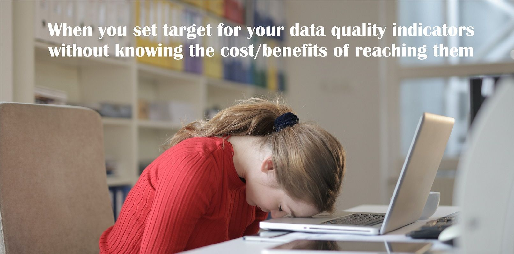

Repost Linkedin : https://www.linkedin.com/posts/yacine-bekka_dataquality-dama-data-activity-7016309770659766273-1AiP?utm_source=share&utm_medium=member_desktop
I have stopped using hashtag#dataquality dimensions and you should too ! Here’s why… ⬇
Can you really tell the difference between accuracy, consistency and validity dimension without looking at the hashtag#dama DMBOK ? I find this notion a bit confusing and difficult to explain to business people.
I often see the case where those dimensions are used as a way to define data quality indicators (i.e. : accuracy rate or consistency rate) and usually there is not much clarity on what those indicators mean. The main problem is that interpretation of those dimensions can vary drastically depending on context and the audience.
It is more useful to know what the metric represents exactly in plain business terms rather than know that it is the accuracy/consistency/validity/synchronicity/whatever dimensions indicator.
Data quality indicators must be factual, precise, driven by business rules and cannot not rely only on those notions as they are too much subject to interpretation. It must also be easily shareable with people that are not be knowledgeable on those concepts as addressing the root cause(s) might involved virtually anybody in the organization.
I’m not saying we should dump data quality dimension but maybe take a step back. Under the assumption that data quality rules are in fact business rules, the data quality indicators should measure if we comply with our business rules. Then data quality dimensions can be used as a way of categorizing our business rules and subsequent data quality indicators but not as the main driver for rules definition.
To illustrate that, the reasonability rate of your customer referential most likely doesn’t ring any bell to your business stakeholders or if it does chances are that the exact meaning is unclear… at best. On the other hand if you talk about the rate of invoice not associated with a valid customer, the exact meaning is much more perceptible at a glance, which would contribute to a better understanding of data quality by business.
Original picture from Andrea Piacquadio on Pexels
